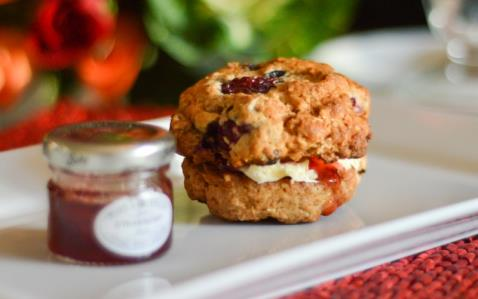

English Scones
Nutritional Facts (per serving)
Calories 249 | Total Fat 15g | Saturated Fat 5g | Carbohydrates 27g | Fibre 4g | Protein 2g
Serves: 12
Ingredients
- 1 tbsp. honey
- 100ml unsweetened apple juice
- 100g butter
- 4 tbsp. unsweetened almond milk
- 1 tsp. vanilla essence
- 200g self-raising flour
- 200g almond flour
- 2 tsp. bicarb of soda
- 100g raisins
- 2 tbsp. Stevia
Method
Step 1: Preheat the oven at 190°c/Gas Mark 5.
Step 2: Combine the honey, unsweetened apple juice, butter, almond milk and vanilla essence together.
Step 3: Mix together the self-raising flour, almond flour, bicarbonate of soda, raisins and Stevia to make a dough.
Step 4: Roll the dough out onto a lightly floured surface until it is about an inch and a half thick.
Step 5: Cut out circular shapes using a pastry cutter and place these on a greased baking tray.
Step 6:Roll any remaining bits of dough together and repeat so that all the mixture is used.
Step 7: Bake for around 20 minutes.
Step 8: Enjoy with lashings of homemade jam!